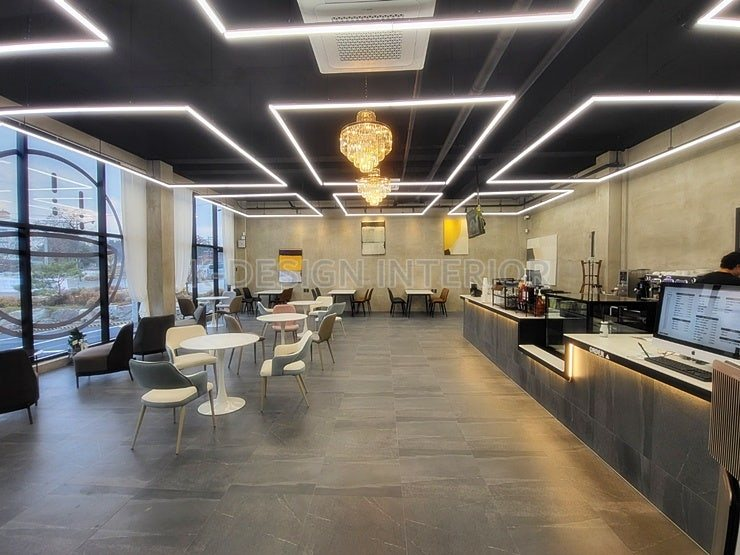

충남 아산 용화동
용화동 상가
인테리어
용화동에서 매장을 새로 열거나 기존 매장을 리모델링할 때, 케이디자인 대표가 직접 현장을 보고 상담합니다. 카페, 헤어샵, 필라테스 스튜디오, 음식점까지 업종에 맞는 공간을 만듭니다.

상담부터 완공까지
공정이 바뀔 때마다 진행 상황을 공유합니다.
전화 상담
평수와 공사 범위, 희망 일정을 알려주세요.
현장 실측
대표가 용화동 현장을 직접 재고 설비 상태를 봅니다.
디자인과 견적
디자인과 항목별 견적을 함께 드립니다.
시공
공정마다 진행 상황을 공유합니다.
완공과 점검
마감을 함께 확인한 뒤 인도합니다.
용화동 상업공간 인테리어 체크포인트
용화동 현장에서 자주 받는 질문을 정리했습니다.
소방·안전 기준 검토
업종과 면적에 따라 필요한 소방·안전 설비가 달라질 수 있어 설계 단계에서 함께 검토합니다.
업종에 맞는 설비부터 확인
용화동에서 카페나 음식점을 준비한다면 전기 용량, 급수·배수 위치, 주방 환기 덕트 경로를 먼저 확인해야 합니다. 케이디자인은 실측 단계에서 이 부분을 함께 점검합니다.
조명으로 분위기 만들기
라인 조명, 간접조명, 펜던트 조명을 공간 성격에 맞게 섞으면 같은 마감재도 전혀 다른 분위기가 됩니다. 아래 시공 사례의 카페와 한식당이 그 예입니다.
관리하기 쉬운 마감재
바닥과 벽 마감재는 청소와 보수가 쉬운 소재를 고르는 것이 길게 보면 유리합니다. 업종별로 많이 쓰는 마감재를 비교해 안내합니다.
상업공간 시공 사례
케이디자인이 설계하고 시공한 현장입니다. 사진을 누르면 크게 볼 수 있습니다.
카페
라인 조명, 샹들리에한식당
간접조명 진열장한식당 조경 홀
실내 조경 화단, 곡선 벽미용실 대기 공간
진열 선반, 파티션상업공간 인테리어, 이런 공사를 합니다
용화동 현장 상황을 보고 꼭 필요한 공사부터 제안합니다.
- 외관 리모델링
- 필라테스 스튜디오
- 헤어샵, 뷰티샵
- 학원, 병원
- 사무실
- 상가, 매장
- 카페, 음식점
- 가까운 시공 지역천안, 아산, 당진, 평택을 중심으로 시공해 용화동 현장도 일정 조율이 수월합니다.
- 한 팀이 끝까지디자인한 사람이 시공까지 맡아, 처음 이야기한 내용이 마감까지 그대로 이어집니다.
- 공정 공유공정이 바뀔 때마다 진행 상황을 공유해, 현장에 자주 오지 못해도 상황을 알 수 있습니다.
자주 묻는 질문
용화동 상가 인테리어도 시공하나요?
네. 아산 용화동 상가, 카페, 음식점, 사무실 등 상업공간 인테리어를 설계부터 시공까지 진행합니다.
헤어샵이나 필라테스 스튜디오도 시공하나요?
네. 헤어·뷰티샵, 필라테스 스튜디오, 공방처럼 업종에 맞는 설비와 동선이 필요한 공간도 시공했습니다.
영업 중인 매장도 부분 리모델링이 되나요?
네. 카운터, 조명, 벽체, 외관 등 필요한 부분만 시공하는 것도 상담 가능합니다. 영업 일정에 맞춰 공정을 조율합니다.
상가 인테리어 상담 때 무엇을 준비하면 좋나요?
업종, 대략적인 평수, 오픈 희망일, 참고하고 싶은 매장 사진이 있으면 상담이 빨라집니다. 도면이 없어도 현장 실측으로 진행할 수 있습니다.
- 상호
- 케이디자인
- 대표
- 김명구
- 시공 분야
- 주거공간, 상업공간 인테리어
- 시공 지역
- 충남 천안, 아산, 당진 / 경기 평택